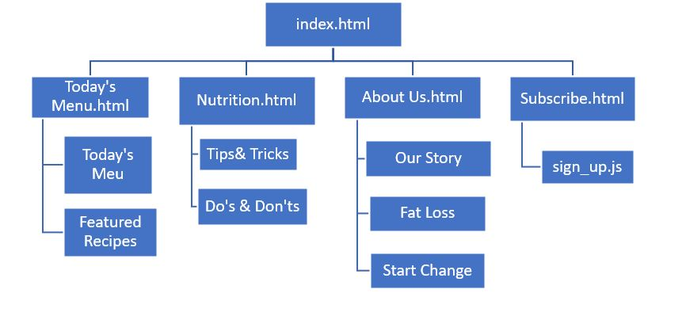
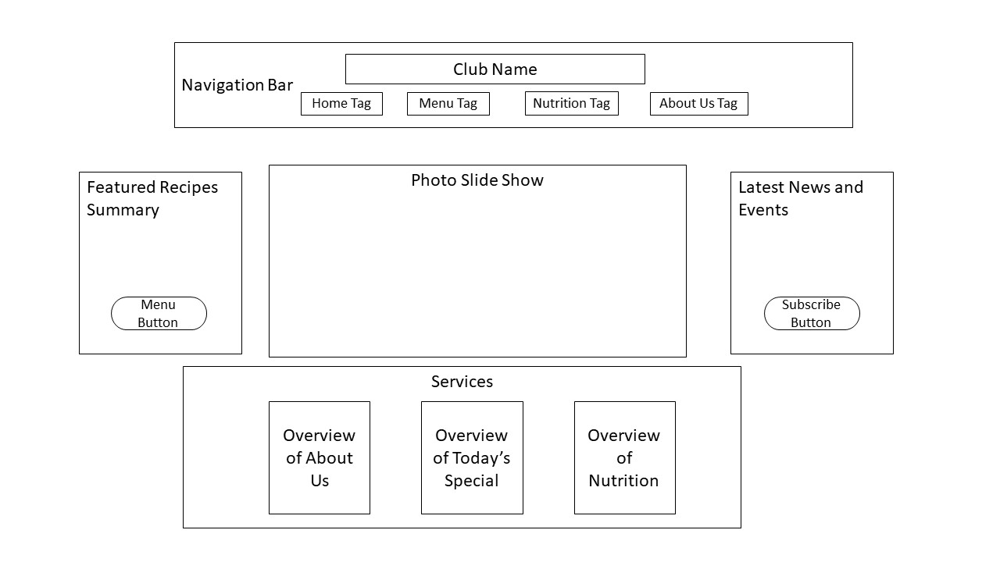
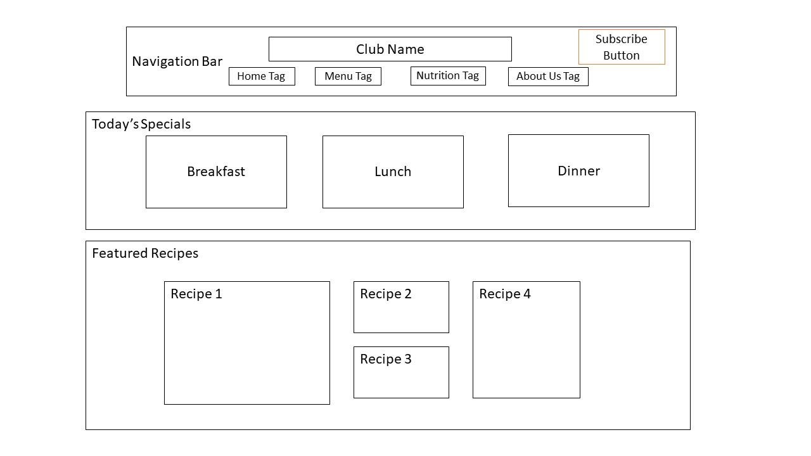
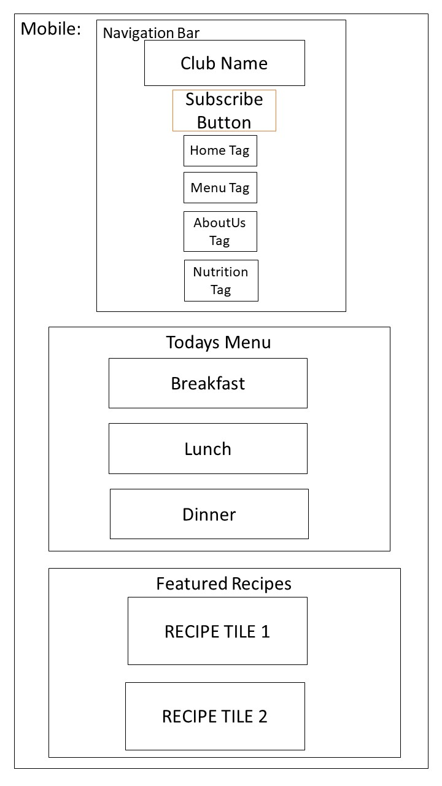
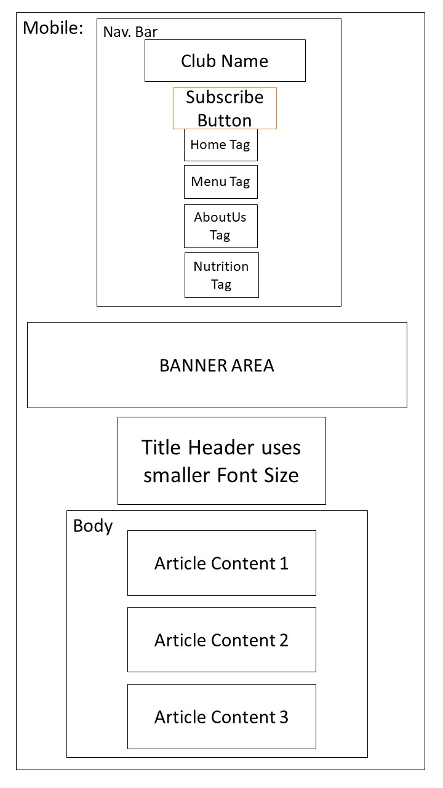
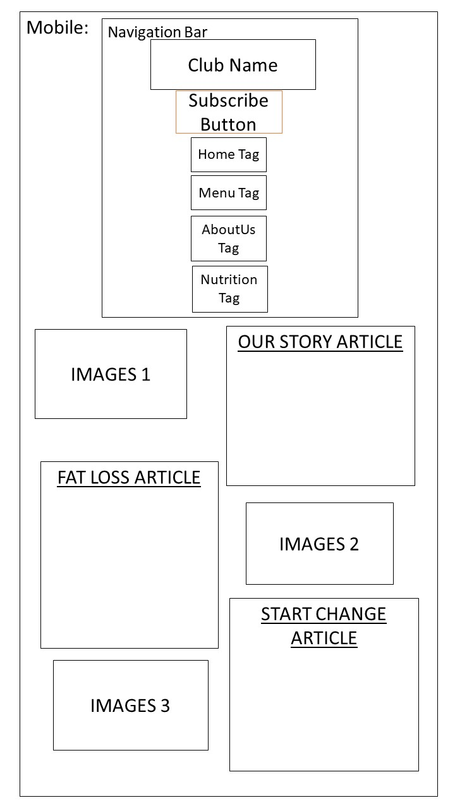
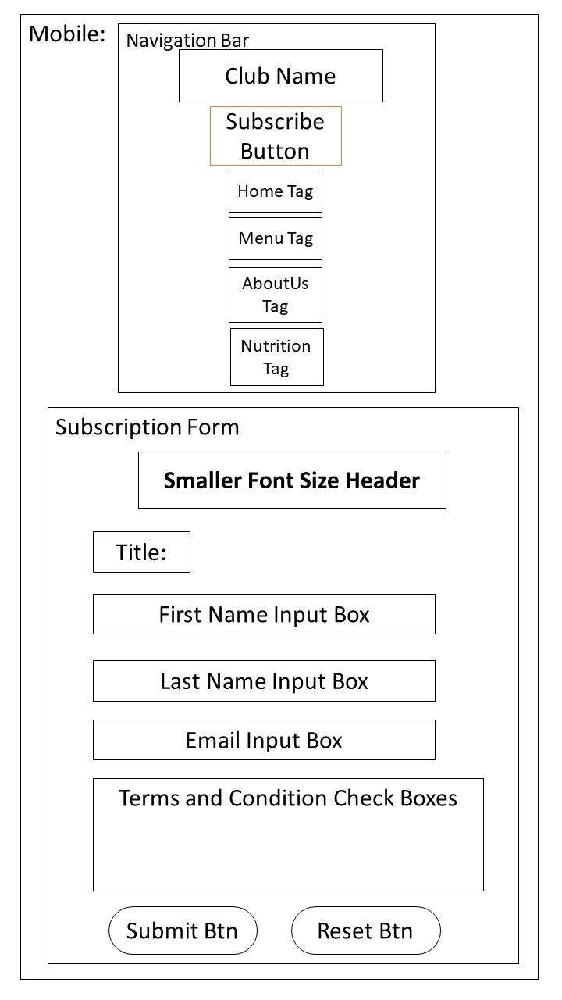

Introduction: What is the essential story being told by your site and what type of structure did you choose to implement.
The website is a Club Newsletter for the “Cook Well, Eat Right Club”, a Cooking club which promotes healthy eating, with simple recipes that are easy to prepare and high in nutrients. The website also provides tips on eating habits with hopes to encourage individuals to prepare fresh home-cooked meals more often and kickstart healthy eating during self-quarantine and isolation.
The website will be a minimalistic design that streamlines key information into short phrases and images to help with easy navigation. The website will be using a Top-Down hierarchy structure as it is more intuitive. The website will change its fonts and layout to accommodate small screen resolution devices such as smartphones as well as monitors or TVs.
Things that have inspired me when creating this website
- As countries are taking stronger measures to contain the spread of COVID, self-quarantine and isolation for weeks have become the norm, however the over-consumption of junk food and takeaways that are high in sugars and sodium may lead to other health related problems. Hence, for this coursework I am inspired to develop a newsletter for my neighborhood culinary Club and combine dietary practices with simple and delicious recipes.
- I am inspired by my community food research club [Food From the Heart] that tries to re-inventing Asian dishes that are adored by millions around the world – by making them healthier and provide more transparency on their nutritional values while keeping them as delicious. I wish to promote these Asian recipes as a healthy way to lose weight not only to the Asian community but to the whole world.
- When searching for the theme of the website online, I came across a nutrition guide provided by the Department of Health Canada[https://food-guide.canada.ca/en/] with informative website design elements with clear and intuitive user navigation. The relavent key information such as dietary tip and eating recommendation are easily recognizable.Users can understand what they are interacting with through the easy to use interface, this is what inspired me to create a minimalistic design interface remove unnecessary tabs or other content that doesn’t support the user’s needs or goals showing only the relavant information.
State 3 ways in which my site is accessible
- For users to gain the best experience with the website, the layout of the website will be responsive to fit different devices by making dynamic changes to the appearance of the website depending on the screensize. The responsive design element is the approach that suggest the web to respond with the user's behavior and screen size. This pratice consist of the frequent use of grids, and CSS media queries.
- The website will use CSS to design a display appearance visible/usable to users with visual impairment.Cursive or Serif fonts with pronounced tails will be used less often so that elders with poor vision or short-sighted users will be able to recognize the words.
- The font sizes on the pages will also change based on the platform the webpage is viewed on. With the [font size:] element in the CSS I was able to manipulate the font sizes of the web content,intergrating in conjunction with the CSS media query I was able to dynamically change the font sizes based of the screen size of the display. Smaller font will fit on small displays such as mobile phones, bigger fonts will be on monitors and TVs as small fonts will be unrecognizable.
State 3 ways in which I have considered usability in my site.
- On the subscription page, alert messages will show to assist the user in filling up the boxes, it will NOT proceed unless the boxes are filled out accordingly to prevent typos. There are also Regular Expression Pattern in place to rule out invalid inputs within the boxes, example; Symbols on the Name boxes will not be allowed or Email addresses have to include the @ value.
- All the links for the html pages will be displayed as tags on the navigational bar, the buttons are used to redirect to the appropriate webpage. It enables users to navigate between pages using a menu bar element that is always centered in the website, this serves a purpose to help visitors to navigate across webpages more easily.
- Menu, Images, Buttons and Content are always displayed around the center of the webpage so that its visitors can find relevant information more easily. The key factor is how the information is presented, it is usually represented in a way that helps visitors understand the content intuitively.The user will be able to complete the task more efficiently as they are interacting with the website.
State 3 things I had to learn or find out to create my site. How did I achieve that?
- The Image Carousel Slideshow on the home page, I had to consult [https://w3schools.com] to find the technique and how to implement them to my website.But the entire code is written by myself and the code is original without any plagarism of the source material. Example: by creating a string of images of the same size horizontally and transitionleft:[]px between each image I can obtain a carousel like scroll effect on the pictures, this is what I found out after various trails and error.
- The food Card and Zoom effect on the Menu.html, for the food images to be displayed is adapted from a Youtube tutorial [Mr. Web Designer,"Complete Responsive Food/Restaurant Website Design",Oct 19 2020][Youtube.com]. To achieve a Food Card with words inside,I have to first, use define a container and use display:grid and grid columns to form a horizontal grid of food containers with text inside the container. Then the transform: scale(1.3); on the :hover selector of the image element to achieve the zoom effect of 1.3 scale when the cursor is hovering on the image.
- The Javascript for the Subscribe.html is a difficult hurdle and I had to consult [https://w3schools.com] again for examples and templates to learn how to create a javascript signup form. The example they provide was helpful to provide insight,but the code does not work in my case and I have to experiment with many tries,to learn it requires a lot of trial and error. Sometimes the code does work as intended such as it does not know what to do once it gotten the element from the html or there is a bug in the function and I have to figure it out myself through many experimenting. All in all, there are a lot of troubleshooting involved during the coding of the script in order to make it interact correctly with the html.
What aspect(s) of your work do you think worked well and why?
The Menu.html page worked out better than I expected, the menu page underwent a lot of exploration and experimentation to achieve the correct aesthetic design. There were a lot of problems as I was coding the CSS for that html , the grid column would not be aligning in the correct order and the zoom effect would continue to scale up without slowing down. It was not surprising as the source that I learned from, did NOT specify how the code works and it was through days of experimentation that I managed to implement it correctly.
Secondly, the Javascript worked out as well since the resources from the [https://w3schools.com] were too advanced for a beginner in Web Design, it was quite difficult to understand the technique. It involved several aspects in the design that I had no idea how it works and how to implement it into my script. That said, I would not copy the whole code as it would be plagiarism. Therefore, I had to study the example provided in W3schools from the tutorials online and trial and error to get the code to work as intended.
What aspect(s) of your work could be improved, and how might you do things differently another time?
The page of nutrition.html could be significantly improved, both aesthetically and efficiency. When designing the wireframe of the page, I was aiming for an easy-to-understand interface such that the user can navigate through the content easily. However, creativity is impractical, and I was not able to replicate what I had originally imagined.
The idea of the nutrition page is modeled after the image below, it has a simple interface design at the same time it displays important information without overcrowding the screen with words. This is what inspired me to model my webpage after. However, the technical knowledge that is required to produce this html design is way too advanced for my current level and I was not able to understand majority of the code that they used. Therefore, due to time restraints I had to simplify the design for nutrition.html. Nevertheless, with enough time and better understanding of the CSS language I believe I can produce something similar or greater even.

Image Source:[Government of Canada,"Food and Nutrition", March 15 2021][https://food-guide.canada.ca/en/]
What resources were used when creating my website?
[Font Sources]-Fonts used in this website are all obtained from loyalty free platforms
- Champagne- Fontmirror.com ,"Champagne and Limousines", 2017[Online] Available in: https://www.fontmirror.com/champagne-limousines [Accessed: 18-March-2021]
- Couture- Fontmirror.com ,"Couture", 2018[Online] Available in: https://www.fontmirror.com/couture [Accessed: 18-March-2021]
- Lemonada Semibold- Fontmirror.com ,"Lemonada", 2017[Online] Available in: https://www.fontmirror.com/lemonada[Accessed: 18-March-2021]
- Rabbit- Fontmirror.com ,"Yellow Rabbit", 2020[Online] Available in: https://www.fontmirror.com/yellow-rabbit[Accessed: 18-March-2021]
- Vonique- Fontmirror.com ,"Vonique 64", 2017[Online] Available in: https://www.fontmirror.com/vonique-64[Accessed: 18-March-2021]
[Icons]- The social media icons used
The Social Media Icons are from a single media icon pack obtained from a loyalty-free stock image website.
Source: Shawn Rubel,"Free Social Media Icons", 2016 Published [Online] Available from: https://www.vecteezy.com/vector-art/95039-free-social-media-icons[Accessed:18-March-2021]
[JavaScript Codes] - The codes that I used in my Javascript are cited or modified from these sources
- Drop DownBox: The Code used to create a dropDownBox is adapted from a tutorial in W3school.com that taught me how to create a clickable dropdown Box in HTML.
Source: W3School.com, "Clickable Dropdown", 2020[Source Code] Available :https://www.w3schools.com/howto/howto_js_dropdown.asp [Accessed: 20 March 2021] - Name and Email Input Boxes: The technique of creating an element in HTML to add the input from the user, processed by the javascript and recalled later, is a code that I learned from Cousera and modified with a tutorial I found in w3schools.com
Source: W3School.com, "How TO - Register Form", 2020[Source Code] Available :https://www.w3schools.com/howto/howto_css_register_form.asp[Accessed: 20 March 2021]
Source: Cousera,"Web Development Week 14 7.3.1 Selecting elements on a page" Available:https://www.coursera.org/learn/uol-web-development/lecture/4HQs1/7-3-1-selecting-elements-on-a-page[Accessed: 20 March 2021] - Regular Expression Pattern: The expression is a form of validation of the form and returns false if the user input the wrong values. By specifiying the initial value of the input field and assigning it to the attribute to the HTML the user can only enter the correct inputs in order to proceed.
Example: Name Boxes; users can only enter alphabets or selected symbols within the box and rejects any numerals as inputs.
Source: Wiktor Stribiżew, "Regular Expression for First Name", Oct 10 2017[Source Code] https://stackoverflow.com/questions/46664142/js-regular-expression-for-first-name
[Menu.html Codes]- The codes that I have adapted from various sources to fit the Menu page of my website
- Food Container: By creating a food container, I was able to contain an image within the box and by utilizing the grid template and repeat vlaue I created a reponsive design that automatically shifts the box in accordance with the screen size. The :hover element, opacity: 0.4 and transform: scale(1.3); provided a zoom effect and reveals the Letters underneath. These techniques I learned during researching from an online Youtube Coding Tutorial, and I adapted it to fit my project.
Source: Channel Coding with Erum "Restaurant Website Design",Apr 3 2020[Source Code]https://www.youtube.com/watch?v=X9M81E4yh6A - Featured Recipes: The featured recipes section is similar to the food container but taken up a notch. By using grid columns and rows we are able to create a nested tiles pattern, the dates and food title are added subsequently to fit within the tiles. The advantage of this method is by using grid display templates, I am to control the nested tiles to fit any screen size automatically without any additional input in the media screen query. The technique is also learned from a youtube code tutorial video, but this code required a lot of trial and error to get contents in place and not out of frame.
Source: Channel Coding Sense "Create a Responsive Website Using CSS Grid Layout",Jun 16 2020[Source Code]https://www.youtube.com/watch?v=f0eK5ToLXSQ
[Nutrition.html Sources]- The source of information when researching about nutrition
When researching about dietary needs and nutrition, I wanted it to come from a Scholarly source to show that the information I am providing is factual. I came across this Article published by MedicalNewsToday and reviewed by Dr. Grant Tinsley, PhD promoting healthy eating and nutritional tips. The article is very informative and at the same time backed by many creditable research and studies therefore, I decided to quote the tips and tricks offered in this article.
Source: Louisa Richards, "29 nutrition tips for better health and longevity", Published by MedicalNewsToday.com,December 2 2020[Online Article] Available from:https://www.medicalnewstoday.com/articles/nutrition-tips
[Image Sources]- The links of the images that I used to create my website, all are obtained from Loyalty-free sources
- Aboutus.jpg - CommunityFoodRescue.com,"Manna Cooking Competition 7", October 20 2018[Photo] Available in: https://www.communityfoodrescue.org/hen-quarter-chef-wins-rescued-food-cooking-competition/manna-cooking-competition-7/
- BackGround1.jpg - 99images.com "Solid Wood Rustic",[Images] Available in:https://www.99images.com/wallpapers/creative-graphics/solid-dark-grey-android-iphone-desktop-hd-backgrounds-wallpapers-1080p-4k-78bx/336224
- banner.jpg- Vecteezy Stock Images.com, "Cute food pattern background",[Illustration] Available in:https://www.vecteezy.com/vector-art/624752-cute-food-pattern-background-kawaii-cartoons
- BeefDon1.jpg- Seriouseats.com-Recipes,Produced by J. KENJI LÓPEZ-ALT,"Gyudon",July 18 2016[Photo]Available in:https://www.seriouseats.com/recipes/2016/07/gyudon-japanese-simmered-beef-and-rice-bowl-recipe.html
- Breakfast.jpg - Lupuschick.com- Breakfast recipes, Produced by MARISA ZEPPIERI, "3 Easy Breakfast Ideas",May 20 2018[Photo] Available in:https://lupuschick.com/3-easy-breakfast-ideas-to-help-balance-immunity-health/
- cake1.jpg - Pixabay Stock Images, "Chocolate Cake"[Photo] Available in: https://www.pexels.com/photo/bakery-baking-cake-chocolate-264892/
- Chicken Lemak.jpg - Fairprice Singapore, "Ayam Lemak Chilli Padi"[Photo] Available in:https://www.fairprice.com.sg/recipes/ayam-lemak-chilli-padi/
- ChikenDon.jpg- Asianfoodnetwork.com - Asian recipes "Comforting Wholesome Vegetable Chicken Soup with Rice" [Photo] Available in:https://asianfoodnetwork.com/en/recipes/cuisine/chinese/vegetable-chicken-soup-with-rice.html
- Community.jpg - People's Community Clinic, "People's Community Clinic Office"[Photo] Available in: https://www.glassdoor.sg/Photos/People-s-Community-Clinic-Office-Photos-IMG930994.html
- Dinner.jpg- Popsugar.com Fitness Meal Prep recipes,Produced by TARAH CHIEFFI "5 Healthy Make-Ahead Dinners", December 21 2019[Photo] Available in: https://www.popsugar.com/fitness/healthy-meal-prep-dinner-recipes-46893839
- Feast.jpg - Shutterstock.com, "Assorted Chinese dishes." Published by Britannica.com[Photo] Available in: https://cdn.britannica.com/12/196512-050-76584C2F/dishes-Chinese.jpg
- HealthMind.jpg - Lhyzie Bongon, "Digestive Health Relies on Healthy Diet, Lifestyle", November 29 2019[Illustration] Available in: https://lhyziebongon.com/digestive-health-relies-on-healthy-diet-lifestyle/
- healthyfats.jpg - The Hello Doctor Team - Food and Nutrition, "Make friends with fat",July 14 2017[Photo] Available in: https://www.hellodoctor.co.za/make-friends-with-fat/
- Lunch.jpg - The Finder Singapore - Food Locations, "Best Lunch Spots In Singapore", 04 June 2018[Photo] Available in: https://sg.thefinder.life/eat-drink/where-eat/best-lunch-spots-in-singapore-that-serve-a-quick-power-lunch/
- Nutrition.jpg- Womans Health Magazine, Produced by CHRISTINE YU, "Mediterranean Diet Food List",MAY 23 2019[Photo] Available in: https://www.womenshealthmag.com/food/a27542959/mediterranean-diet-food-list/
- Porridge.jpg - Seriouseats.com-Recipes,Produced by SHAO. Z,"Ground Pork and Corn Congee",June 24 2020[Photo] Available in:https://www.seriouseats.com/recipes/2014/09/grond-pork-corn-congee-recipe-dim-sum-chinese.html
- ScreenFlow.gif - Yummybros.com, "Customisable For Your Dieting Goals and Taste" published 2020,[Gif] Available in:https://www.yummybros.com/our-story/
- Sugar.jpg - Freepik Stock Images,"Sugar in wooden bowl", 20 Sept 2020,[Photo] Available in: https://www.freepik.com/free-photo/world-diabetes-day-sugar-wooden-bowl-dark-surface_10401423.htm#page=1&query=sugar&position=0
- TikaMasala.jpg - Recipetineats.com- Indian recipes, Produced by Nagi., "Chicken Tikka Masala", 6 Apr 2018[Photo] Available in: https://www.recipetineats.com/chicken-tikka-masala/
- TodaySpecial.jpg - Himalaya Stock Images, "Today's Special",2018 AUG 29[Stock Illustration] Available in:https://www.himalaya.com/food-podcasts/todays-special-241992/chop-suey-21785760
- water.jpg - Stutter Stock Images,"Water", 12 Sept 2020,[Stock Photo] Available in:https://www.shutterstock.com/image-photo/pouring-water-bottle-into-glass-on-146471507
- wholegrains.jpg - Stutter Stock Images,"Wholegrains", 20 Jan 2020,[Stock Photo] Available in: https://www.shutterstock.com/image-photo/healthy-wholegrain-sliced-loaf-walnut-fig-1554588782
Appendices: Site Map, Wireframes and Mockups
[Appendix A] - Site Map :

[Appendix B] - Mockups and Wireframes:
- Mockups
- Big Screen Wireframes
- Small Screen Wireframes
Index Home Page:

- 

Menu HTML Page:

- 
- 
Nutrition HTML Page:


- 
About Us HTML Page:


- 
Subscription Page:


- 